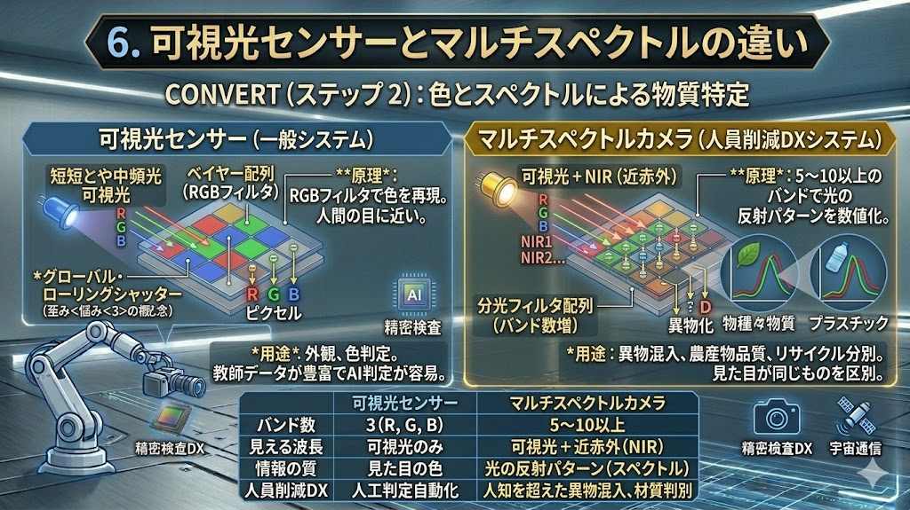

光学・電磁波解析：物理層からのDX自動化
「正解を撮る」ための技術体系。1から6までの完全ガイド
1. 光学領域の特性：UVから赤外まで

短波長・可視光
表面の微細なキズ（散乱）や目視代行に。青(450nm)は微細欠陥、緑(550nm)は標準検査に最適。
赤外 (NIR/SWIR)
シリコンやパッケージを透過し、内部を可視化。物質の透過・吸収特性を活かした特殊検査。
2. 電磁波の連続性：光と電波

ガンマ線から電波まで、エネルギーと波長の関係を俯瞰。テラヘルツ波などの境界領域が次世代の自動化を担います。
3. 幾何・波面補正：物理層でのエラー解決
波面制御 (AO)
空気の揺らぎやレンズの不完全さを、可変形状ミラー (DM) でリアルタイムに打ち消し、回折限界の鮮明度を維持します。
テレセントリック (TC)
主光線を平行化し、高さ変動による視差エラーを物理的に排除。撮像時点で「正しい座標」を確定させます。
4. 視覚的補正原理


5. センサー構造と窓材の決定的な違い

物理レイヤーの最適化
| 項目 | 短波長 (UV/X線) | 赤外線 (IR) |
|---|---|---|
| 受光方式 | 裏面照射型 (BSI)理由：配線層による光の吸収・反射を回避するため。 | 表面 / 裏面照射型理由：長波長は透過力があるため、構造自由度が高い。 |
| 窓材 | 石英 / サファイア理由：一般ガラスはUVを吸収してしまうため。 | ゲルマニウム / Si理由：不要な可視光を遮断し、目的波長のみを通すため。 |
6. 可視光からマルチスペクトルへ

材質を数値化する「光の指紋」
見た目は同じでも材質が異なるものを、反射波形の「指紋（スペクトル）」で瞬時に判別します。
波長別：センサー選定・完全ガイド
| 波長区分 | 代表的センサー | 物理的選定理由 | DXでの価値 |
|---|---|---|---|
| 短波長 | 裏面照射型CMOS | 微細な光子散乱を捉え、表面の極小キズを可視化するため。 | 透明フィルム検査 |
| 可視光 | 一般CMOS | 普及率・解像度・速度のバランスが最高。 | 目視代行・自動化 |
| マルチスペクトル | 分光フィルタ型 | 材質固有の反射スペクトルをピクセル単位で数値化するため。 | 異物混入・材質特定 |
| 近赤外 | InGaAsセンサー | シリコンを透過する波長（1000nm超）を高感度で捉えるため。 | 基板・パッケージ透視 |